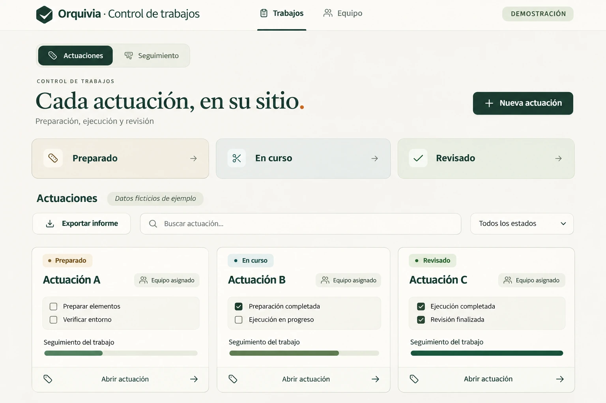

La necesidad
Una actuación tiene una fecha de entrega y varias piezas que coordinar. Los materiales, las personas y el orden de trabajo tienen que encajar.
Coordinación de actuaciones
Coordinamos actuaciones concretas dentro de un proyecto: qué hace falta, quién interviene y cómo encajan los tiempos. Un alcance definido para llevar el trabajo hasta la entrega.
Una actuación tiene una fecha de entrega y varias piezas que coordinar. Los materiales, las personas y el orden de trabajo tienen que encajar.
Preparamos la secuencia, coordinamos los recursos y hacemos seguimiento de la actuación acordada. El alcance y las responsabilidades se definen antes de empezar.
Hemos coordinado operaciones de colocación de materiales en plazos de ejecución muy cortos. La preparación, la secuencia de trabajo y el seguimiento se organizan alrededor de una entrega concreta.
Aplicaciones desarrolladas
Aplicaciones desarrolladas para seguir consultas, coordinar trabajos y preparar documentos de gestión. Vistas de muestra adaptadas para proteger la información de cada proyecto.

Una herramienta para registrar actuaciones y consultar su estado. El seguimiento se adapta a la secuencia de trabajo del equipo.
Experiencia aplicada
Documentación de arquitectura y retail, coordinación de actuaciones y seguimiento visual de consultas para project managers. Experiencia que da forma a nuestros servicios.
Hemos coordinado la colocación de materiales con un plazo de ejecución muy ajustado, organizando los recursos y la secuencia de trabajo.
Ver el enfoqueEmpezamos por escucharte
En 15 minutos situamos una tarea concreta y el resultado que buscas. No hace falta preparar una presentación ni explicar toda tu empresa.
Exploremos tu proyecto